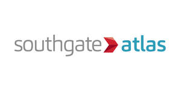

Trade Mark Journal No.2025/040 3 October 2025
UK00004262083 10 September 2025 (9,35,38,39,42)

- Class 9
- Measuring, detecting and monitoring instruments, indicators and controllers; safety, security, protection and signalling devices; any of the above for use with packaging; tilt detectors for measuring and indicating when a pre-determined degree of tilt has been received by an article to which it is associated; apparatus and instruments all for detecting, monitoring, measuring and checking (supervision) of physical impacts; impact detection and recording apparatus; electronic security tags; apparatus and instruments, all for use in detecting, monitoring and recording of handling and storage conditions exceeding pre-determined levels of impact, tilt, external pressure, temperature, humidity, radiation, contamination or elapsed time; transit monitors to detect tilting or dropping of goods, packages and cargo during transit; electronic tracking apparatus and instruments; electronic tracking devices for tracking assets using IoT technologies; electronic devices used to locate assets employing the global positioning system or cellular communication networks; global positioning system (GPS) devices and apparatus; asset tracking sensors that measure location, movement and environmental conditions; computer software for tracking assets using electronic tracking devices; electronic tracking incorporating wireless technology; computer hardware featuring wireless technology; SIM cards; mobile phone applications; software and applications for mobile devices; downloadable mobile applications for the transmission of data and information; software applications for GPS tracking, geolocation and real-time map-based visualisation; parts and fittings for the aforementioned goods.
- Class 35
- Tracking services; providing tracking services and information concerning tracking of assets in transit; consultancy services in relation to the implementation and use of IoT technologies for asset tracking; consultancy, advisory and information services connected with the aforementioned services.
- Class 38
- Telecommunication services; telecommunication services, namely, providing electronic notification alerts via the internet and global communication networks; electronic notification alerts tracking temperature, humidity monitoring; geo-fencing, shock, movements, crash and tamper detection data; providing email, Short Message Service (SMS) and Application Programming Interface (API) notification alerts tracking temperature, geo-fencing, shock, movements, crash and tamper detection data; data transmission; data transmission services; consultancy, advisory and information services connected with the aforementioned services.
- Class 39
- Tracking and tracing services; asset tracking services; asset tracking services for third parties; provision of tracking information relating to assets; provision of tracking and positioning services and systems; tracking and locating assets by means of satellite technology for third parties; making available information in electronic form, and telecommunication of information to third parties to allow tracking and location of third party assets; consultancy, information and advisory services relating to the aforesaid service.
- Class 42
- Cloud-based services; cloud computing services; cloud computing services for real-time asset tracking and analysis; cloud storage for electronic data; technical data analysis; software as a service (SaaS) services featuring software for computers, mobile phones, mobile phone applications and handheld computers, namely, software for use in use in detecting, monitoring and recording of handling and storage conditions exceeding pre-determined levels of impact, tilt, external pressure, temperature, humidity, radiation, contamination or elapsed time; transit monitors to detect tilting or dropping of goods, packages and cargo during transit and GPS tracking; Software as a service (SaaS) for real-time graphic map-based tracking of assets; software as a service (SaaS) featuring software for computers, mobile phones, mobile phone applications and handheld computers, namely, software for use in asset tracking, inventory management and location monitoring; computer services for the analysis of data; consultancy, advisory and information services connected with the aforementioned services.
Southgate Global Limited
Representative: Knights Professional Services Limited